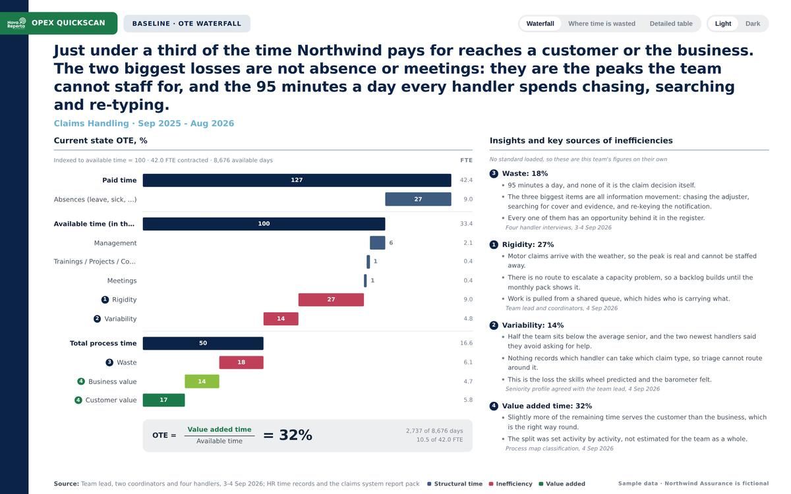
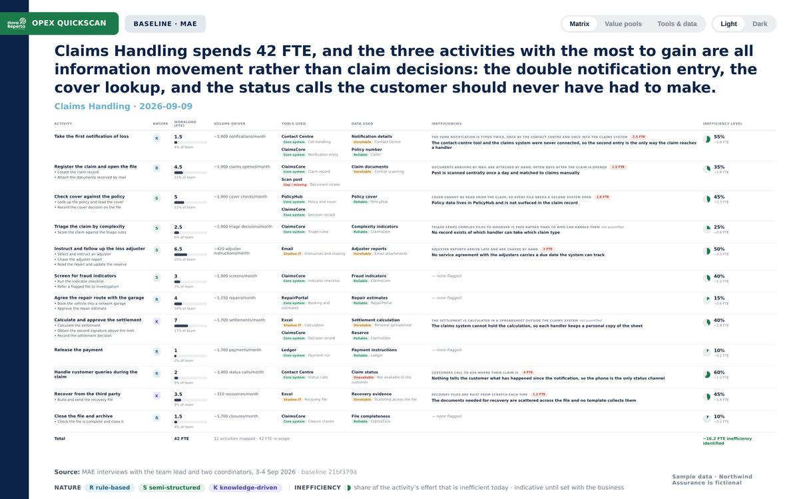
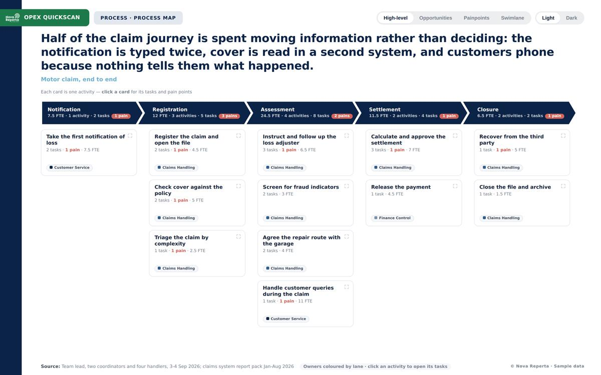
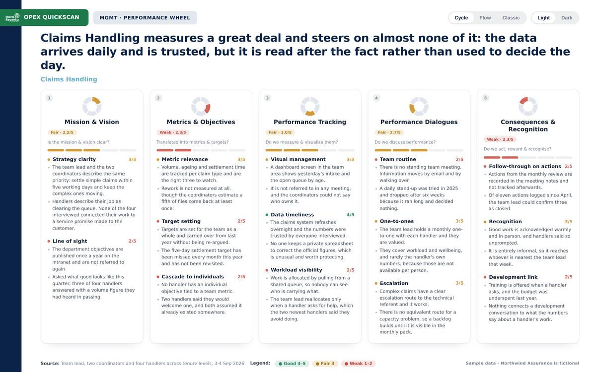
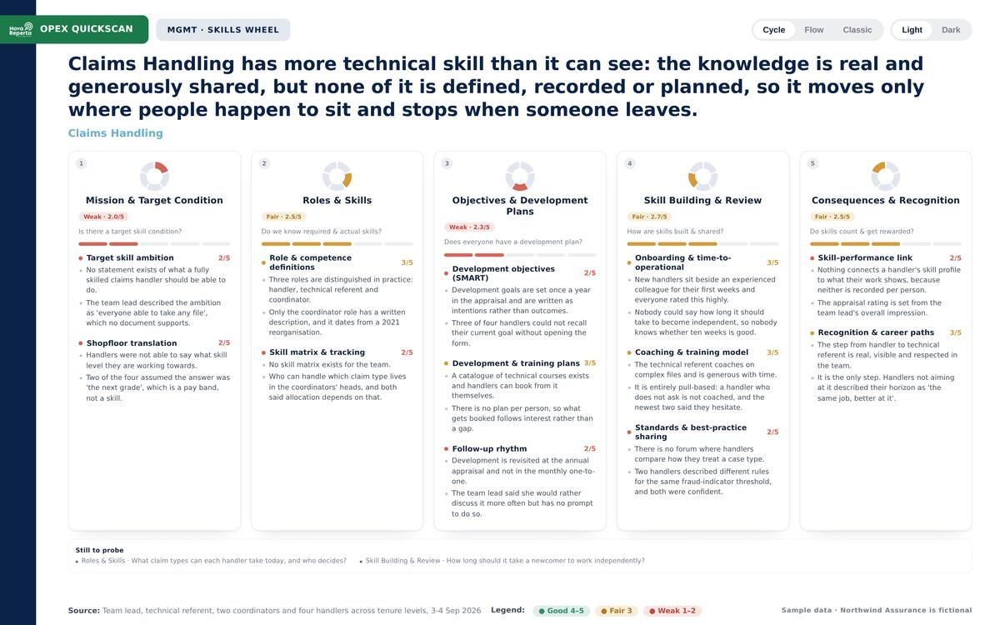
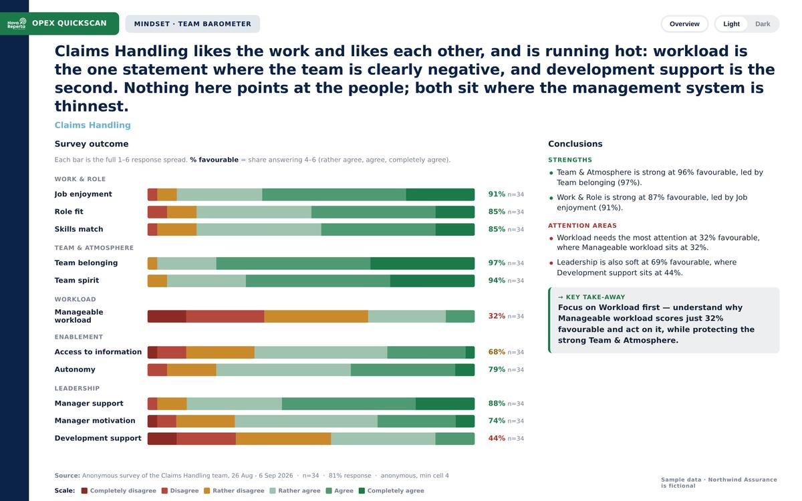

A mid-size non-life insurer that does not exist. We ran the first stage of the engagement on its Claims Handling team so there is something complete to look at: one set of facts, six analyses, and a single story they all support. Every figure and quote here is invented.
Claims Handling measures a great deal and steers on almost none of it. The claims system refreshes overnight and nobody keeps a private spreadsheet to correct it, which is rare and worth protecting — but the numbers are read after the fact rather than used to decide the day.
The losses are not in the claim decisions themselves. They are in moving information around them: the notification is typed twice because the contact-centre tool was never connected to the claims system, cover has to be looked up in a second system on every file, and customers phone in to ask where their claim stands because nothing tells them.
The team survey lands in the same place from the other side. Team spirit is at 96% favourable and workload at 32% — the one clearly negative statement. Neither of those is about the people.
Each one opens exactly as you would receive it. The working copy is the same document with the editing tools switched on — that is the version we use live in a session with your team.

Start from the hours you pay for and take away holidays, absence, meetings, waiting and rework, step by step, until what is left is the time actually spent on claims. Here that is a third of it.

Everything the team does, what each one costs in people, what drives the volume, which systems carry it, and how much of that effort is avoidable. This is the one that puts a number on the problem.

A claim from first notice to closure, step by step, with the measured problems marked on the steps where they happen and the improvements that answer them.

The way the team is steered day to day, scored across five parts. It is where the "measures plenty, steers on almost none of it" conclusion comes from.

The same five questions asked about competence. Real technical skill, generously shared, and nothing written down — so it travels only where people happen to sit.

An anonymous survey of the team, 34 of 42 answering. You see the full spread of answers to every statement, not just an average.
A view of how the organisation is structured, the service seen from the customer's side, a session on who decides what, the executive summary, and the set of questions the whole engagement set out to answer. All on this same example, appearing here as they land.
Northwind Assurance is fictional. Every figure, quote and finding on these pages was written for this site. Real client work is never published here.